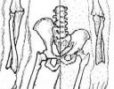
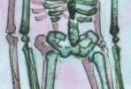
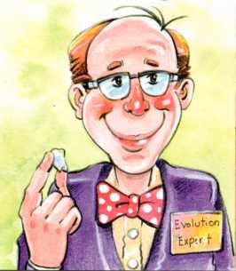
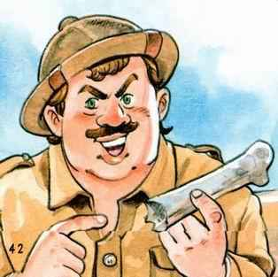

Reseña: Esqueletos en tu armario
Esqueletos en tu armario, by Gary Parker (1998), is a creationist book for children which tackles the subject of human evolution and argues that there is no valid evidence for it. The book takes the form of a conversation about human evolution between Parker, his wife, and their four children. It seems to be aimed at fairly young children; there's not a lot of text, and there are colorful illustrations by Jonathan Chong on every page. There is some material on Biblical or theological themes, but I will be ignoring that and reviewing only the material on human evolution.El libro de Parker consiste en una enorme cantidad de desviaciones y evasión de la mayor parte de las mejores pruebas de la evolución humana. Se discuten todos los favoritos antiguos del creacionismo como el Hombre de Piltdown, el Hombre de Nebraska, Ramapithecus y el Hombre de la Nuez. Por supuesto, estos tienen poca o ninguna relevancia para el estudio moderno de la evolución humana, y algunos de ellos nunca la tuvieron.
El Hombre de Piltdown es un famoso fraude fósil que fue aceptado como legítimo durante décadas. Afectó negativamente el estudio de la evolución humana durante décadas, pero para la época en que se publicó Skeletons, el engaño había sido expuesto durante 45 años. El Hombre de Nebraska, sin embargo, nunca fue ampliamente considerado un ancestro humano y no tuvo impacto en el estudio de la evolución humana antes de su correcta identificación solo unos años después de su descubrimiento. Ramapithecus es un simio fósil que, entre aproximadamente 1960 y 1975, fue a menudo considerado un ancestro humano basándose en algunas especulaciones excesivamente entusiastas, pero no ha sido importante en la evolución humana desde entonces.
Parker dedica un par de páginas a discutir el fósil 'Zinjanthropus' o 'Nutcracker Man'. Se trata de un fósil legítimo, el cráneo de un australopithecino robusto, denominado OH 5, descubierto en 1959 por Louis y Mary Leakey. Parker sugiere que la mayoría de los científicos creían que el OH 5 era un ancestro humano y un usuario de herramientas, y así lo hicieron hasta 1972, cuando Richard Leakey encontró huesos de humanos modernos enterrados a un nivel más profundo.
De hecho, Louis Leakey fue el único científico que alguna vez consideró seriamente la idea de que OH 5 era un ancestro humano; para la mayoría de los demás científicos, parecía obvio que se trataba de algún tipo de australopithecino robusto. Incluso Leakey abandonó rápidamente la idea, porque menos de un año y medio después descubrió otros huesos de homínidos (OH 7, ahora asignados a Homo habilis) por debajo de OH 5. Los «huesos de humanos modernos» descubiertos por Richard Leakey no son huesos de humanos modernos, y de hecho fueron descubiertos en otro sitio muy lejano.
Parker menciona tres otros "grandes errores": un hueso de caimán, un hueso del dedo del pie de un caballo y una costilla de delfín, todos supuestamente mal identificados como homínidos. Los dos primeros de estos son tan oscuros que nunca he podido averiguar los detalles sobre estos fósiles o quién los malidentificó. Sea lo que sea que fueran, son irrelevantes: nunca fueron aceptados ni siquiera nombrados como especies de homínidos y se hundieron sin dejar rastro.
En cuanto a la costilla del delfín, es casi tan irrelevante. Parker dice que "... el evolucionista que la encontró pensó que podía probar que era un homínido que caminaba erguido!" pero la verdad es algo diferente. El científico que encontró el fósil dedicó un considerable esfuerzo a intentar identificarlo, y finalmente decidió que probablemente era un homínido, pero otros científicos en una conferencia lo identificaron como una costilla de delfín. Tampoco este fue nombrado como un homínido, y su descubridor nunca afirmó que podía probar que caminaba erguido; ese detalle fue simplemente inventado por Parker. [1]
A diferencia del espacio dedicado a estas irrelevancias, los fósiles legítimos son ignorados o malinterpretados.
Homo erectus apenas se menciona, y solo en conexión con los fósiles de Java Man y Turkana Boy erectus. Se afirma erróneamente que el Turkana Boy es idéntico a los humanos modernos, y Java Man se descarta como un error (Parker parece creer que la calota craneal de Java Man pertenece a un simio), a pesar del hecho de que los cráneos de estos dos fósiles son muy similares. Se oculta el hecho de que existen docenas de fósiles de erectus y que su anatomía craneal, en particular, es bastante diferente a la de los humanos modernos. Los lectores podrían fácilmente obtener la impresión de Parker de que la especie de Homo erectus ni siquiera existe.
Homo habilis, una de las especies más importantes en la evolución humana, ni siquiera es mencionada. (Muchos creacionistas ahora afirman que habilis no es una especie válida, pero eso no es cierto.) Un cráneo habiline es mencionado indirectamente (ER 1470, en la p. 37), pero sus huesos son incorrectamente descritos como "iguales a los del hombre moderno".
Molesto, Parker no proporciona referencias para la mayoría de sus afirmaciones importantes. Solo hay 8 referencias en todo el libro, la mayoría para puntos poco importantes, y todas menos una se refieren a otras fuentes creacionistas. Le escribí a Parker dos veces, pidiéndole referencias para muchas de sus afirmaciones, incluyendo la mayoría de los puntos listados a continuación. Nunca recibí ninguna respuesta.
Aquí hay una serie de las afirmaciones más cuestionables del libro:
- p. 11: Como ejemplo de la arbitrariedad de las reconstrucciones, Parker afirma que un cráneo de camello podría ser reconstruido para parecer un voraz carnívoro. Resulta que esto solo es cierto si eres incompetente; en la vida real, una clase de estudiantes no tuvo dificultad para deducir a partir de un cráneo de camello que debía ser herbívoro en lugar de carnívoro (ver el artículo de Anj Petto Over the Hump - Taking the AIG Camel Challenge!)
- p. 12: Parker repite la vieja afirmación de que los neandertales eran simplemente personas normales con enfermedades óseas. Naturalmente, como nosotros, los neandertales sufrieron de enfermedades óseas, aunque no creo que se haya descubierto ningún neandertal con raquitismo, lo que Parker sugiere al afirmar que sufrieron de una escasez de vitamina D. Pero la idea de que las enfermedades óseas causaron la anatomía neandertal ha sido desacreditada (y lo ha sido por más de un siglo), y pocos, si es que hay alguno, científicos creen en ello ahora.
- p. 13: Parker sugiere fuertemente que los neandertales realizaron excelentes pinturas rupestres. No lo hicieron; no hay pinturas rupestres que se consideren de neandertales.
Parker dice que Dubois "no le dijo a nadie durante más de treinta años sobre los cráneos humanos [Wadjak] que descubrió". Esto también es falso; de hecho, Dubois publicó tres artículos mencionando los cráneos Wadjak poco después de su descubrimiento.
Parker dice que "Al menos Dubois finalmente contó la verdad, y ningún científico informado sigue llamando al error de Java un homínido". ¿Cómo lo llaman entonces? Parker no lo dice, pero esto suena como una repetición del viejo chiste creacionista de que Dubois finalmente decidió que la calota craneal del Hombre de Java era simplemente un gibbon gigante y nada que ver con la evolución humana. Incorrecto otra vez; Dubois nunca abandonó su afirmación de que el Hombre de Java era un ancestro humano. Esta afirmación desacreditada ha sido abandonada incluso por Answers in Genesis, quienes la incluyen en su lista de Argumentos que creemos que los creacionistas NO deberían usar.
"Mom: ...Pero otros científicos no solo miraron [a Lucy]; tomaron mediciones.Por lo que puedo determinar, esto es una ficción completa. Nunca he oído hablar de ningún artículo científico que afirmara que Lucy no caminaba erguida. Solo puedo imaginar que Parker tiene algún recuerdo confuso de un artículo bien conocido de Charles Oxnard (1975), en el que Oxnard afirmaba algunas similitudes funcionales entre algunos huesos de australopithecino y orangutanes. Sin embargo, Oxnard estaba examinando especímenes sudafricanos de A. africanus, no Lucy (que es de A. afarensis). Y, Oxnard no dijo que A. africanus no pudiera haber caminado erguido.
Dana: ¿Qué mostraron las mediciones?
Mom: Mostraron que Lucy no no caminaba erguida. De hecho, otro simio, un orangután, habría caminado más como una persona que Lucy."
|
 La similitud tal como se representa en Zihlman (1984) con el chimpancé a la izquierda y Lucy a la derecha |
 La similitud tal como se representa por Parker |
Excepto por tener dientes pequeños en lugar de grandes, y un pelvis cuadrúpedo en lugar de bípedo, los chimpancés pigmeos son notablemente similares a los australopitecos gráciles tempranos en sus dimensiones esqueléticas.
Un aspecto desagradable del libro es la continua denigración de Parker hacia los científicos, tanto en las palabras como en las imágenes. Algunos dibujos caricaturescos representan a los científicos como obesos o delgados (siempre desagradables), y tontos o deshonestos. Esto es bastante ridículo, viniendo de alguien con la descuidada relación de Parker con la verdad. Aquí hay un par de ejemplos:
|
 El descubridor del «Hombre de Nebraska», soñando despierto con su hallazgo. |
 Este científico tiene una burbuja que dice: «Estos huesos obviamente pertenecen a una hembra de «hembra de mono» con un coeficiente intelectual de 47 que llevaba a uno de sus 3 hijos mientras caminaba erguida». |
La ilustración que acompaña las afirmaciones de Parker sobre los cráneos de Wadjak (discutidos anteriormente) muestra a un hombre con máscara, bajo la cobertura de la noche, colocando un cráneo humano en una caja etiquetada como "Prueba para ocultar - El hombre antes del Hombre-hormiga".
Más tarde, afirma que Donald Johanson alteró deliberadamente y fraudulentamente la pelvis de Lucy para hacerla parecer que era bípeda. Esto se basa en el primer episodio de la serie NOVA In Search of Human Origins, donde Johanson hace declaraciones que, para aquellos de mente conspirativa, podrían interpretarse como una admisión de haber manipulado los huesos. Sin embargo, al leer el guion cuidadosamente, queda claro que los huesos habían sido originalmente rotos y las piezas fusionadas durante la fosilización. Como explicó el científico Owen Lovejoy en el programa, los huesos estaban originalmente en una 'posición anatómicamente imposible', por lo que rompió un molde del fósil (no el original) en un intento de revertir el daño ocurrido durante la fosilización. (Para más información véase: Índice de afirmaciones creacionistas sobre la reconstrucción de la pelvis de "Lucy")
En otro lugar, uno de los hijos de Parker pregunta retóricamente si las exhibiciones de los museos no están siendo deshonestas al mostrar fósiles como el Hombre de Java y el Hombre Martillo de Nuez. Efectivamente, lo serían si los fósiles estuvieran siendo malinterpretados, pero no hay evidencia de que ese sea el caso. El Hombre de Java se clasifica correctamente como Homo erectus en los museos, y el Hombre Martillo de Nuez como un australopithecino robusto no ancestral de los humanos. Si Parker tiene alguna razón para afirmar que estas no son identificaciones correctas, debería exponerlas en lugar de lanzar insultos a la honestidad de los museos.
Parker, como muchos creacionistas, no puede resistir la tentación de manchar la evolución con la etiqueta del racismo, y trae a colación casos en los que científicos afirmaron que los aborígenes o los negros eran subhumanos. Tales casos sí existen, aunque es imposible evaluar los ejemplos de Parker debido a la falta de referencias. Sospecho, sin embargo, que estos casos son aberraciones de científicos individuales y que las afirmaciones no representaban el pensamiento científico estándar de su época. Y, por supuesto, Parker no menciona que los científicos creacionistas tanto antes como después de Darwin fueron a menudo igualmente racistas. [2]
Referring al genocidio en Tasmania, Parker dice: «Los colonos creían tan firmemente que los nativos de Tasmania eran parte animal que formaron una cadena humana en partes de la isla para cazar y matar a todos los pueblos nativos». [3] Aunque claramente intenta culpar a la evolución por esto, ocurrió en 1830, unos treinta años antes de que Darwin publicara su teoría. Los colonos no eran evolucionistas, sino que eran mayormente cristianos; quizás Parker debería reconsiderar su creencia de que la evolución es responsable del racismo.
Aunque Parker se jacta de sus credenciales científicas (e incluso dice una vez, de manera nauseabunda, que "...soy un científico que pasa mucho tiempo estudiando fósiles. Es mi negocio saber cosas como esas"), no hay evidencia en este libro de que tenga algún conocimiento de primera mano de la literatura científica sobre la evolución humana. Por lo que pude determinar, todo el material en el libro de Parker podría haber sido reciclado de otras fuentes creacionistas, y probablemente lo fue; es difícil ver cómo alguien familiarizado con la literatura científica podría equivocarse tanto. Dudo que incluso prestara mucha atención a sus fuentes creacionistas: Parker es tan descuidado con sus hechos que sospecho que a menudo trabajaba desde la memoria.
Admito que no llegué a este libro esperando quedarme impresionado. Sin embargo, me sorprendió lo terriblemente malo que era. Parker es, después de todo, una figura importante en el mundo del creacionismo (consulte su biografía aquí). Fue prominente en el Instituto de Investigación del Creacionismo durante muchos años, y luego fundó Answers in Genesis junto con Ken Ham. Tiene calificaciones legítimas, incluyendo un doctorado en educación científica. Y sin embargo, a menudo parece desconocer incluso lo que otros creacionistas dicen sobre la evolución humana, y mucho menos lo que dicen los científicos reales. El libro de Parker es un ejemplo de lo peor de la literatura creacionista, una colección descuidada de desinformación reciclada.
Este libro no solo carece de información científica confiable, sino que además es deshonesto hasta el fondo y extremadamente incompetente. Cualquier niño que se basara en Skeletons in your Closet no tendría ninguna esperanza de poder participar en una discusión sobre la evolución humana, ni siquiera sería capaz de entender dicha discusión. Incluso los creacionistas deberían sentirse avergonzados por este libro. [4]
Notas al pie
1. El descubridor de la costilla de delfín fue Noel Boaz. Puedes leer más sobre este incidente en el libro de Boaz Quarry, y en Lucy's Child de Johanson y Shreeve. Volver al texto
2. Por ejemplo, el creacionista racista virulent Louis Agassiz, como lo describió Stephen Gould en su libro The Panda's Thumb. Darwin, por el contrario, fue notablemente no racista para su época y un oponente apasionado de la esclavitud. Volver al texto
3. De hecho, el propósito de la "Línea Negra" no era matar a los aborígenes restantes, sino capturarlos. Volver al texto
4.
Aunque aparentemente no lo son. Tanto Answers in Genesis como el Instituto para la Ciencia del Creacionismo venden Skeletons, con el ICR llamándolo un "libro hito".
[Actualización Sep 2008: Hmm, ahora parece haber desaparecido del catálogo del ICR. AIG aún lo tiene, pero con un banner de "... este artículo ya no está disponible".]
[Actualización May 2011: Ahora parece haber desaparecido también del catálogo de AIG. Quizás se sintieron avergonzados por ello.] Volver al texto
Referencias
Oxnard C. (1975): El lugar de los australopitecos en la evolución humana: ¿bases para la duda? Nature, 258:389-95.
Zihlman A.L. (1984): Chimpancees pigmeos, personas y los expertos. New Scientist, (15 de noviembre de 1984)39-40.
Esta página es parte del FAQ sobre homínidos fósiles en el Archivo TalkOrigins.
Página de inicio |
Especies |
Fósiles |
Creacionismo |
Lectura |
Referencias
Ilustraciones |
Novedades |
Comentarios |
Búsqueda |
Enlaces |
Ficción
http://www.talkorigins.org/faqs/homs/closet.html, 09/30/2004
Copyright © Jim Foley
|| Envíame un correo electrónico